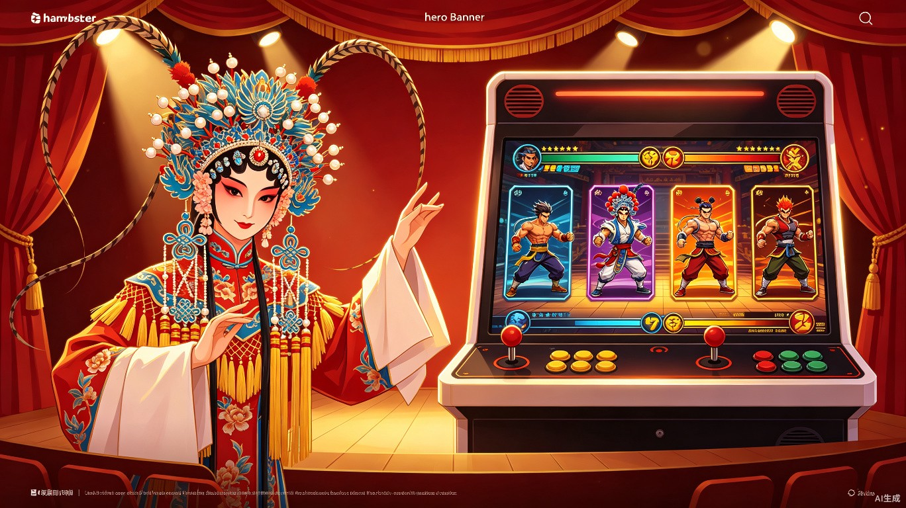
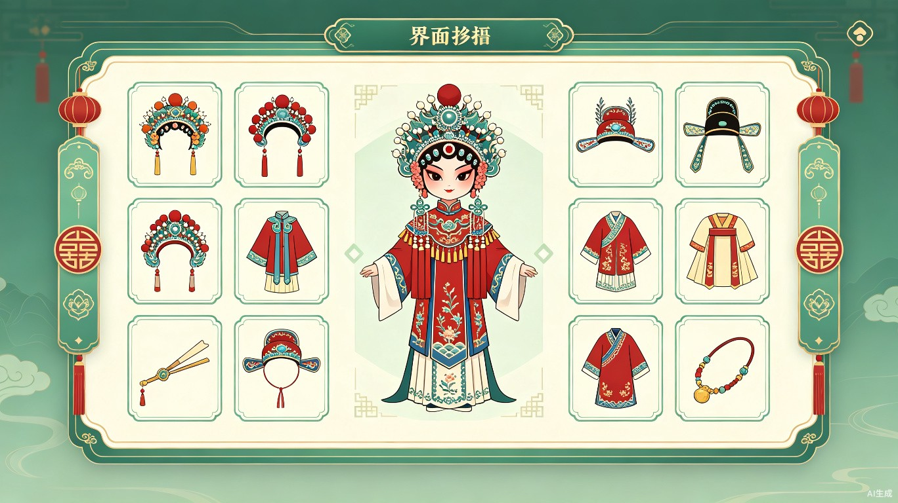
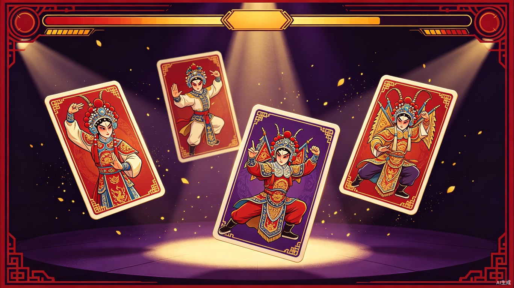
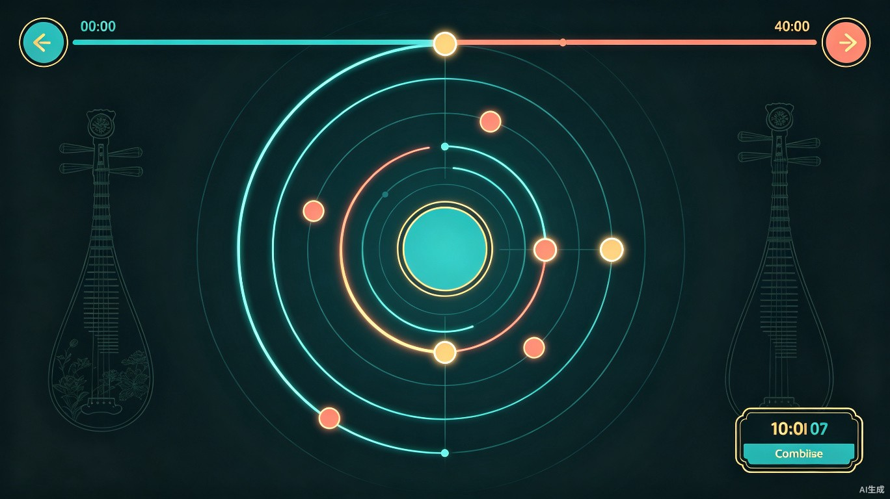

非遗互动游戏 — 让年轻人在游戏化关卡中，感受粤剧的千年魅力
粤剧"出招"体验馆是一款面向年轻人的非遗文化互动游戏。玩家将在游戏化关卡中参与经典粤剧片段（如《帝女花·香夭》），通过"玩"的方式自然感受粤剧艺术的独特魅力。
我们将粤剧复杂的身段动作类比为"格斗游戏的出招卡"，将华丽的戏服行头转化为可收集的换装道具，将经典唱段改编为节奏点击玩法——用年轻人熟悉的游戏语言，消解传统文化的高认知门槛。
对传统文化有好奇心但零基础的年轻人、大学生群体。他们可能在小红书刷到过粤剧变装视频，在B站看过戏曲混剪，却从未真正"入门"。
传统戏曲欣赏需要大量背景知识，年轻人往往"听不懂、看不懂"，初次接触即被劝退。
现有非遗科普多为纪录片或图文介绍，缺乏互动性，难以在信息爆炸时代抓住注意力。
观众与戏曲之间是单向接收关系，没有"参与感"和"成就感"，难以形成持续兴趣。
以经典剧目《帝女花·香夭》为蓝本，设计三个模块化关卡，玩家可自由选择感兴趣的部分进行体验。

根据角色身份与剧情场景，从数十件粤剧传统行头（凤冠、蟒袍、褶子等）中挑选正确搭配。搭配成功后解锁该服饰的文化知识卡片，了解其工艺、历史与象征意义。错误搭配会触发趣味提示，引导玩家重新思考。

根据剧情提示（如"公主悲愤交加"），从手牌中选择对应的粤剧身段动作（水袖、台步、眼神、手势）。每张卡牌对应一个经典动作，配有真人演示动画。将粤剧身段类比为"格斗出招"，降低认知门槛，增强传播趣味性——玩家会自发地称它为"粤剧版街霸"。

跟随经典唱段的节拍点击屏幕，类似《节奏大师》的玩法。音符轨道融入粤剧锣鼓经的节奏元素，完成后根据准确率解锁唱词解析卡片，讲解唱词典故与粤语韵律之美。即使听不懂粤语，也能通过节奏感受戏曲音乐的独特张力。
项目中集成 AI 智能体，扮演"粤剧小师父"角色，为玩家提供个性化陪伴与知识服务：
基于现代前端技术栈构建，确保开发效率与视觉表现力的平衡，适合单人开发者快速迭代。
角色立绘、服饰道具、场景背景等视觉素材主要采用 AI 生成 + 设计师精修 的方式；音乐与音效从开放授权的传统戏曲音频库中提取片段，或使用 Tone.js 合成锣鼓经节奏。
将粤剧身段类比为"格斗游戏出招"，天然具备社交传播性，容易引发年轻人的好奇心与分享欲。
三个关卡完全独立，玩家可只玩换装、只玩节奏或只玩卡牌，降低尝试成本，实现多圈层渗透。
知识卡片作为通关奖励出现，学习是"玩"的副产品而非前置任务，彻底告别生硬科普。
同时命中"生活娱乐""非遗文化创新""青少年心理健康"多个标签，评审视角差异化明显。
MVP 可直接在比赛现场投屏演示，评委和观众可亲手试玩，记忆点深刻，区别于纯PPT方案。
技术栈成熟、素材可AI生成，3-4周内可完成可演示版本，非常适合个人开发者参赛。
完成 React 项目脚手架、路由系统、全局状态管理；搭建三个关卡的空壳页面与导航流程。
实现服装搭配系统的拖拽选择逻辑与评分算法；完成身段出招的卡牌系统与剧情分支。
使用 Tone.js 实现节奏检测与判定系统；接入大语言模型 API，实现知识卡片生成与对话引导。
UI 动效打磨（Framer Motion）、音效调试、素材替换；部署到 Vercel 并优化移动端体验。
粤剧"出招"体验馆不仅是一款游戏，更是一次用当代语言与古老艺术对话的实验。我们相信，当年轻人能在手机屏幕上"甩"出一记漂亮的水袖、"打"出一套完整的身段连招时，他们与非遗之间的距离，就已经近了一大步。
这不是让粤剧变得"不正经"，而是让它变得可亲近、可参与、可传播。